Un cliente llena el carro y solo en el checkout descubre que algunos productos no llegan a su ubicación. Analicé el journey y los datos y diseñé una propuesta, para web y app, que pide la dirección desde el inicio.
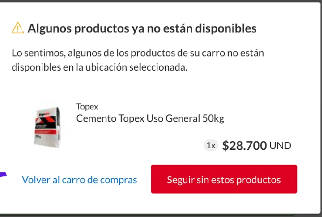
El cliente descubre en el checkout que su carro no se puede despachar a su zona.
Los errores de cobertura crecen y afectan a más usuarios, en web y en app.
Mover la pregunta de la dirección al inicio del recorrido, y solo si el usuario quiere.
Una dirección visible en home, PLP y PDP, con opciones de envío y disponibilidad por tienda.
El objetivo era garantizar la disponibilidad de los productos desde el inicio del viaje, para que lo que se muestra pueda entregarse en la ubicación del cliente.
El cliente agrega varios productos al carro, pero solo al llegar al checkout, cuando debe ingresar su dirección de despacho, se entera de que uno o más no están disponibles para ese lugar.
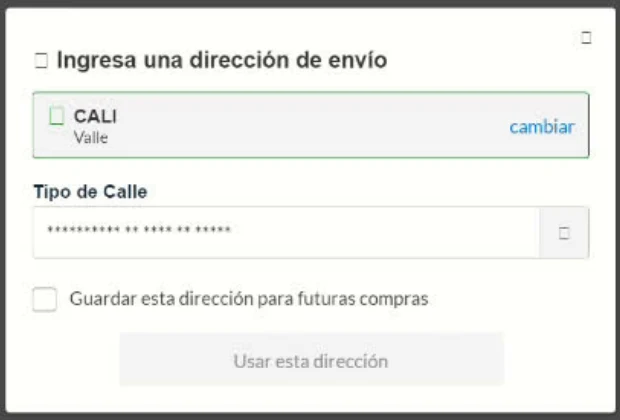
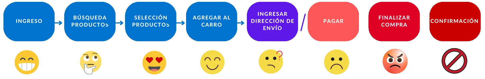
Mi aporte fue entender el problema de punta a punta y llevarlo a los equipos de web y app como una propuesta concreta.
Mapeé el recorrido del cliente y cuantifiqué los errores de cobertura en web (2023–2024) y en la app (jul–oct 2024).
Definí cómo se pide, confirma y muestra la dirección en home, PLP y PDP, y cómo se traslada a la app desde el onboarding.
Facilité el workshop para alinear a los equipos de web y app alrededor de la misma propuesta.
Un mapa de las etapas del cliente y de lo que siente en cada una.
Cómo lo apliquéUbicó el punto de quiebre en “ingresar dirección de envío”, no en el pago.
Decidir con evidencia de uso y no solo con intuición.
Cómo lo apliquéUsé Adobe Analytics para medir visitas con error, usuarios afectados y tipo de error de cobertura.
Llevar a varios equipos del problema a una decisión compartida.
Cómo lo apliquéOrdené la sesión como historia: dolor, datos, solución y propuesta por canal.
Comparé 2023 con 2024 en la web (2024 todavía en curso) y revisé la app desde que se empezó a marcar este tipo de error.
El error de cobertura total concentra alrededor del 60% de los casos de cobertura en la web.
En 2024, cada usuario afectado vio en promedio 3,6 errores en la etapa de delivery, 1,6 de ellos de cobertura.
De julio a octubre de 2024, los errores de cobertura se repiten unas 2,5 veces por usuario afectado, y el error total tiene una participación promedio de 53% mes a mes.
Fuente: Adobe Analytics. Se muestran variaciones y proporciones; octubre de 2024 en la app es un dato parcial.
El problema no era el checkout: era que la pregunta sobre la dirección llegaba demasiado tarde.
Conecté el dolor del cliente con la evidencia de datos, para que web y app discutieran el mismo problema.
La propuesta invita a indicar la dirección “si así lo desea” el usuario, sin bloquear la navegación.
Con la dirección desde el inicio, lo que se ve tiene disponibilidad, precio y tiempo de entrega reales para esa zona.
Del usuario confundido al usuario satisfecho: una experiencia donde el cliente indica su dirección de envío desde que ingresa.
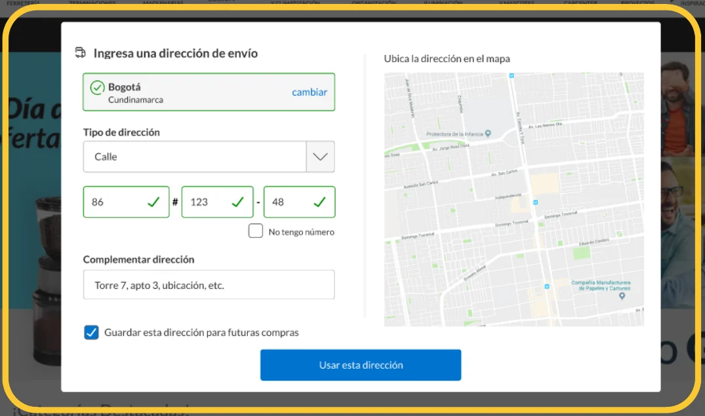
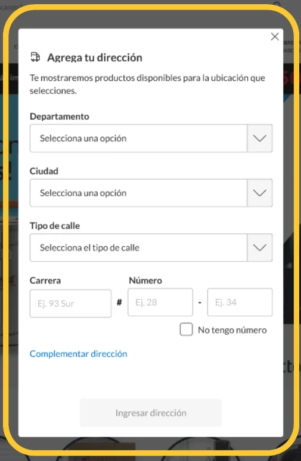
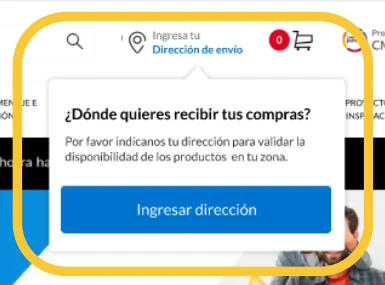
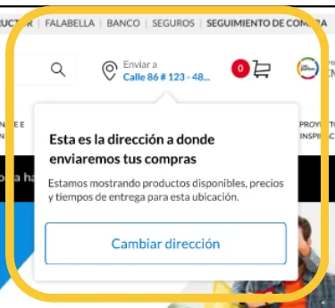
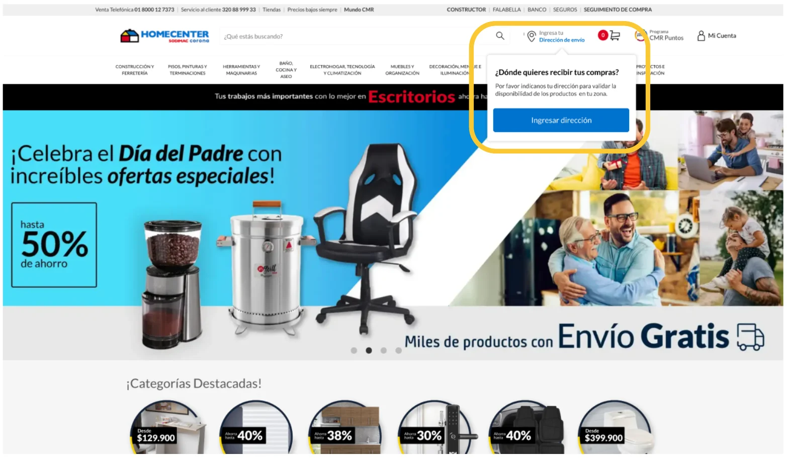
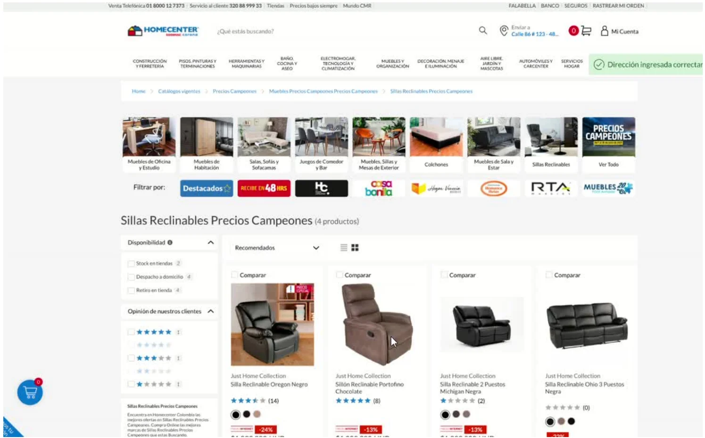
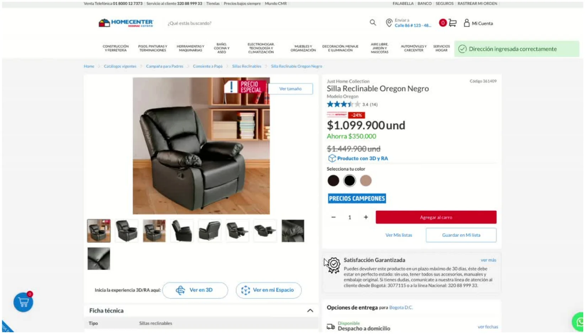
Configurar dirección y tienda desde el onboarding.
Mostrar la dirección en todo el viaje del cliente: home, PLP y PDP.
Mostrar las opciones de envío en las PDP.
Mostrar la disponibilidad del producto en tiendas en las PDP.
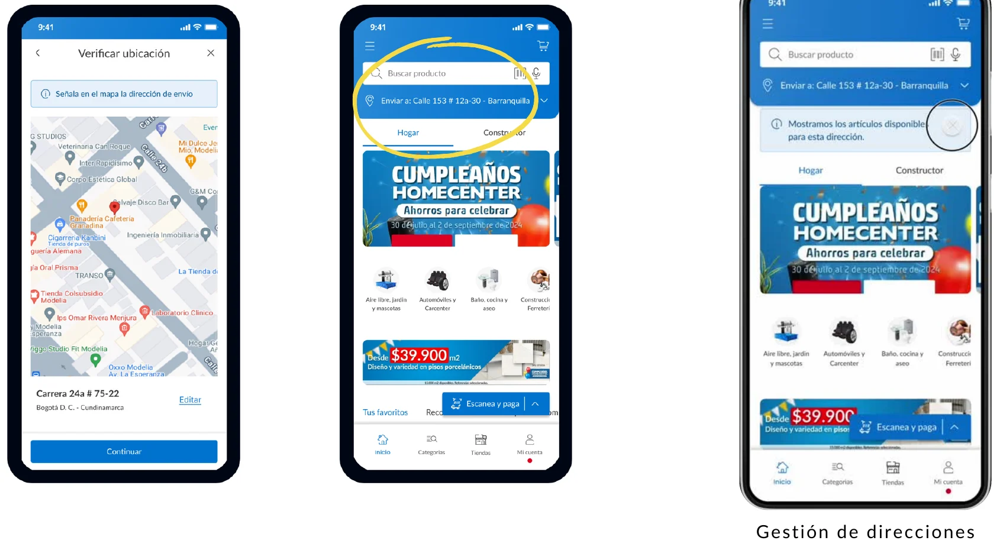
Esta propuesta busca fluidez en la compra y menos interrupciones por cobertura. Estas son las señales con las que se puede verificar.
Bajar la proporción de visitas con error en la fase de delivery frente al 15% de 2024.
Reducir los errores de cobertura por usuario afectado (1,6 en la web, unas 2,5 en la app).
Que el cliente llegue al checkout con un carro que sí puede despacharse a su ubicación.
Son hipótesis de medición definidas en la propuesta, no resultados reportados.